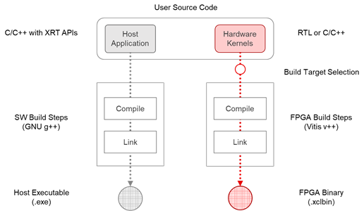

2021.1 Vitis™ 入門チュートリアル2020.2 チュートリアルを参照 |
Vitis フロー 101 – パート 1: 基本概念¶
Vitis 統合ソフトウェア プラットフォームは、標準プログラミング言語を使用して FPGA でアクセラレーションされた アプリケーションを開発して配布するためのフレームワークを提供します。Vitis には、次のような標準ソフトウェア開発環境の機能がすべて含まれています。
x86 または Arm® プロセッサで実行されるホスト アプリケーション用のコンパイラまたはクロス コンパイラ
FPGA バイナリをビルドするためのクロス コンパイラ
コードの問題を特定して解決するのに役立つデバッグ環境
ボトルネックを特定し、アプリケーションを最適化するのに役立つパフォーマンス プロファイラー
Vitis プログラミングおよび実行モデルの理解¶
Vitis でアクセラレーションされたアプリケーションは、ソフトウェア プログラムと FPGA バイナリ (ハードウェア アクセラレーション カーネルを含む) の 2 つのコンポーネントで構成されます。
ソフトウェア プログラムは C/C++ で記述され、従来の CPU 上で動作します。ソフトウェア プログラムは、ザイリンクス ランタイム ライブラリ (XRT) でインプリメンテーションされたユーザー空間 API を使用して、FPGA デバイスのアクセラレーション カーネルとやりとりします。
ハードウェア アクセラレーション カーネルは、C/C++ または RTL (Verilog または VHDL) で記述して、FPGA デバイスのプログラマブル ロジック部分内で実行できます。カーネルは標準 AXI インタフェースを使用して Vitis ハードウェア プラットフォームと統合されます。

Vitis でアクセラレーションされたアプリケーションは、データセンターまたはエンベデッド アクセラレーション プラットフォームのいずれかで実行できます。
データセンター プラットフォームの場合、ソフトウェア プログラムは x86 サーバー上で実行され、カーネルは PCIe の接続されたアクセラレーション カード上の FPGA 内で実行されます。
エンベデッド プラットフォームでは、ソフトウェア プラットフォームがザイリンクス MPSoC デバイスの Arm プロセッサで実行され、カーネルが同じデバイス内で実行されます。
Vitis アプリケーションのソフトウェアおよびハードウェア コンポーネントは、標準化されたインターフェイス (XRT API および AXI プロトコル) を使用してやりとりするため、ユーザーのソース コードがプラットフォーム固有の詳細情報にほとんど依存しないので、異なるアクセラレーション プラットフォーム間で容易に移植ができるようになっています。
ソフトウェア プログラムがハードウェア カーネルとやりとりする方法は複数あります。最も簡単な方法では、次が実行されます。
ホスト プログラムがカーネルで必要とされるデータを FPGA デバイスのグローバル メモリに書き込みます。
ホスト プログラムが、カーネルの入力パラメーターを設定します。
ホスト プログラムがカーネルの実行をトリガーします。
カーネルは必要な計算を実行し、必要に応じてグローバル メモリにアクセスしてデータの読み書きをします。カーネルはストリーミング接続を使用してほかのカーネルとやるとりすることもできます。
カーネルがホストにタスクが完了したことを通知します。
ホスト プログラムは、グローバル メモリからホスト メモリにデータを転送したり、別のカーネルににデータの所有権を移すことができます。
Vitis ビルド プロセスの理解¶
Vitis ビルド プロセスでは、ホスト プログラムとカーネル コードの両方に対して標準のコンパイルおよびリンク プロセスに従います。
ホスト プログラムは、データセンター アプリケーション用の GNU C++ コンパイラ (g++) またはザイリンクス MPSoC デバイス用の GNU C++ Arm クロスコンパイラを使用してビルドされます。
FPGA バイナリは、Vitis コンパイラを使用してビルドされます。まず、カーネルはザイリンクス オブジェクト (.xo) ファイルにコンパイルされます。そのあと、.xo ファイルがハードウェア プラットフォームにリンクされ、FPGA バイナリ (.xclbin) ファイルが生成されます。Vitis コンパイラとリンカーは、さまざまなオプションを適用して、結果を調整および最適化します。

Vitis ビルド ターゲットの理解¶
Vitis コンパイラには、デバッグおよび検証に使用する 2 つのエミュレーション ターゲット、および実際の FPGA バイナリを生成するのに使用されるデフォルトのハードウェア ターゲットの 3 つのビルド ターゲットがあります。
ソフトウェア エミュレーション - カーネル コードは、ホスト プロセッサ上で実行されるようにコンパイルされます。これにより、ビルドと実行を高速に繰り返して反復アルゴリズムで調整していくことができます。このターゲットは、構文エラーを特定し、アプリケーションと共に実行されるカーネル コードをソース レベルでデバッグし、システムの動作を検証するのに便利です。
ハードウェア エミュレーション - カーネル コードがハードウェア モデル (RTL) にコンパイルされ、専用シミュレータで実行されます。ビルドおよび実行ループにかかる時間は長くなりますが、詳細でサイクル精度のカーネル アクティビティが表示されます。このターゲットは、FPGA に配置するロジックの機能をテストして、初期パフォーマンス見積もりを取得する場合に便利です。
ハードウェア - カーネル コードがハードウェア モデル (RTL) にコンパイルされ、FPGA にインプリメントされて、実際の FPGA で実行されるバイナリが生成されます。